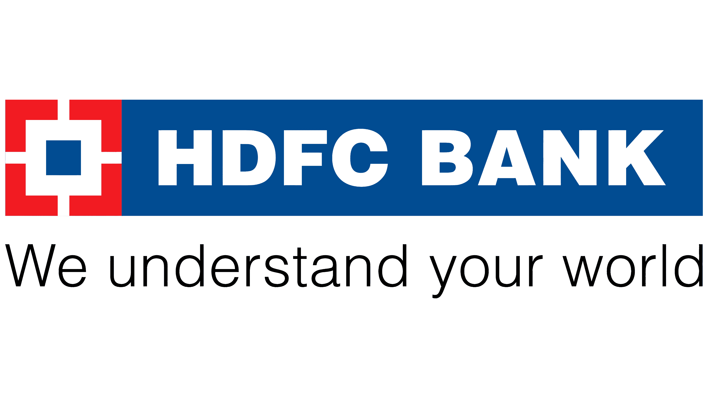

Yoga & movement
Guided joint movement, mobility and Hatha yoga, adapted to the group. Explore how you move and where you hold unnecessary effort.
A practical starting point for desk-based teams.
Corporate wellness · With Ankur Bhati
Give your people time to move, breathe and settle their attention. Live yoga, pranayama, meditation and Yoga Nidra, planned around your team and the time you have.
14 years of yoga teaching 9 years in Human Resources
Live online or in person, by arrangement.

Previous engagements





A teacher who understands work
Workplace wellbeing becomes more tangible when people can experience it: moving after hours at a desk, noticing their breathing, or taking time for guided rest.
Ankur brings together 14 years of teaching yoga and nine years in Human Resources. Sessions are led by him, with attention to the participants, their experience and the setting. The brief may be a team gathering, a session for managers or a regular place for practice in the working week.
We begin with what would be useful for your people, then choose the practices and format.
What people actually practise
One clear focus, or a considered combination. Each practice is explained and guided.
Guided joint movement, mobility and Hatha yoga, adapted to the group. Explore how you move and where you hold unnecessary effort.
A practical starting point for desk-based teams.
Learn to notice and work with the breath through progressively taught practices. The pace and techniques are chosen for the group’s experience.
For a session centred on breath and attention.
Guided attention practice with clear instructions and time to notice what happens. No previous meditation experience is needed.
For teams and leaders exploring how they meet distraction and pressure.
A guided rest and awareness practice, usually experienced lying down. Space, clothing and support are discussed when planning the session.
For an intentional pause within a team day or offsite.
Make it relevant
A shared practice that makes room for movement, breath or rest. Accessible guidance for people with different levels of experience.
Breath awareness, meditation and reflection on habitual effort. A chance to observe attention and practise pausing before responding.
A clear discussion about purpose, participants, time, space and delivery. Agree the scope and practical requirements before confirming a session.
Find a starting point
Choose a few details to shape your enquiry. You can change these when you speak with Ankur.
Try a brief pause
Before reading on, take a comfortable seat. Let the guide offer a rhythm, without trying to make the breath bigger or deeper.
Follow only while it feels easy. There are no breath holds. Return to your natural breathing or stop if you feel uncomfortable or lightheaded.
This is a brief breathing guide, rather than a full pranayama lesson.
Starts only when you choose. Sound is optional.
Fit it to the occasion
The focus, duration and fee are agreed around your brief.
Easy to plan
Tell Ankur who will join, why you are planning the session and what you have in mind.
Discuss the practice, time, venue or online setup, participation needs and fee.
Ankur leads the agreed session with clear instructions and adaptations discussed for the group.
For the organiser
No. Tell Ankur about the group when planning. Instructions, pace and practices can be chosen for people who are new to yoga as well as those with experience.
That depends on the practice. Breath awareness and meditation need a different setup from an asana session or lying-down Yoga Nidra. Share your available space and whether people will be in work clothes, so the session can be planned realistically.
Live online and in-person delivery can be discussed. Include your locations, time zones and approximate group size in the enquiry so the arrangements can be considered.
Duration and fees depend on the focus, delivery, group and practical arrangements. Share your available time and an indicative budget if you have one. Ankur will discuss the scope and fee before you commit.
Start with the working context and what you would like people to learn or experience. The programme selector above can help you describe this. Ankur will discuss which practices fit; you do not need to arrive with a finished brief.
These are educational yoga and mindfulness sessions. They can sit alongside a broader workplace wellbeing programme, with appropriate clinical and organisational support arranged separately.
Organisation enquiry
Tell Ankur who the session is for and what you have in mind. The focus, practical arrangements and fee are agreed before you book.
Fields marked * are required. An enquiry does not confirm a booking.
Prefer email? Contact Ankur